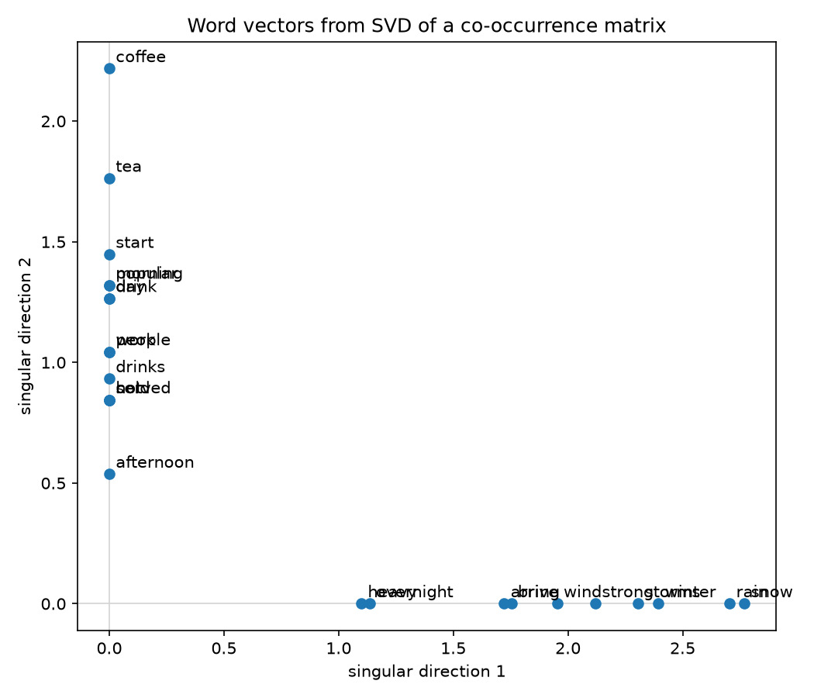
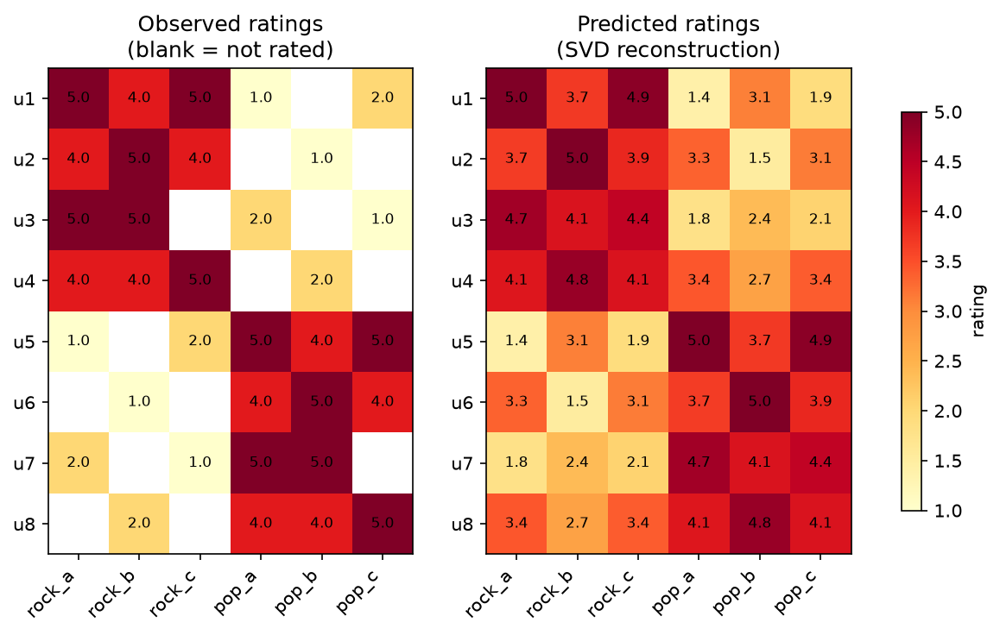

Singular Value Decomposition (SVD)¶
Where this shows up
PCA, low-rank matrix approximation, pseudo-inverses / least squares, recommender systems (matrix factorization), and as the numerical backbone under a lot of "compress this big matrix" tricks in ML papers.
Definition¶
Any real matrix \(A \in \mathbb{R}^{m \times n}\) can be factored as
- \(U \in \mathbb{R}^{m \times m}\) and \(V \in \mathbb{R}^{n \times n}\) are orthogonal (\(U^\top U = I\), \(V^\top V = I\)).
- \(\Sigma \in \mathbb{R}^{m \times n}\) is diagonal (in the rectangular sense — zero off the main diagonal) with non-negative entries \(\sigma_1 \geq \sigma_2 \geq \dots \geq \sigma_r \geq 0\), the singular values, where \(r = \mathrm{rank}(A)\).
Columns of \(U\) are the left singular vectors, columns of \(V\) the right singular vectors.
Where U, V, Σ come from¶
- The columns of \(V\) are eigenvectors of \(A^\top A\); the columns of \(U\) are eigenvectors of \(A A^\top\).
- The singular values are the square roots of the (shared, non-negative) eigenvalues of \(A^\top A\) and \(A A^\top\): \(\sigma_i = \sqrt{\lambda_i}\).
- So SVD generalizes eigendecomposition to non-square, non-symmetric matrices — every matrix has an SVD, but not every matrix has an eigendecomposition.
Geometric picture¶
\(A\) maps the unit sphere in \(\mathbb{R}^n\) to an ellipsoid in \(\mathbb{R}^m\): \(V^\top\) rotates the input, \(\Sigma\) stretches each axis by \(\sigma_i\), and \(U\) rotates the result into place. The \(\sigma_i\) are literally the lengths of the ellipsoid's semi-axes.
Low-rank approximation (Eckart–Young)¶
Writing \(A = \sum_{i=1}^r \sigma_i u_i v_i^\top\) (sum of rank-1 terms, largest \(\sigma_i\) first), the best rank-\(k\) approximation of \(A\) in both Frobenius and spectral norm is just truncating the sum:
This is the "why" behind SVD-based compression: keep the top-\(k\) singular triples, drop the rest, and you have the closest possible rank-\(k\) matrix — with error \(\|A - A_k\|_F = \sqrt{\sum_{i=k+1}^r \sigma_i^2}\).
Relation to PCA¶
For a centered data matrix \(X\) (rows = samples, columns = features), PCA's principal components are exactly the right singular vectors \(V\) of \(X\), and the projected scores are \(U \Sigma\). In practice, SVD on \(X\) directly is more numerically stable than eigendecomposing the covariance matrix \(X^\top X\).
Pseudo-inverse¶
The Moore-Penrose pseudo-inverse falls out directly:
where \(\Sigma^+\) inverts the non-zero singular values in place and transposes the shape. This gives the least-squares solution to \(Ax = b\) even when \(A\) isn't square or invertible.
import numpy as np
A = np.random.randn(50, 20)
U, s, Vt = np.linalg.svd(A, full_matrices=False)
k = 5
A_k = U[:, :k] @ np.diag(s[:k]) @ Vt[:k, :] # best rank-k approximation
Example: word vectors from a co-occurrence matrix¶
A classic "count-based" way to turn words into vectors: count how often words appear near each other across a corpus, then run SVD on the resulting matrix and keep the top singular directions as word vectors. Related words end up with similar vectors because they tend to appear in similar contexts, not because they ever appear next to each other directly.
Building the co-occurrence matrix¶
Fix a vocabulary of \(n\) words and a window size \(w\). For each occurrence of word \(i\) in the corpus, count every other word \(j\) that falls within \(w\) tokens of it and increment \(M_{ij}\). This gives a symmetric \(n \times n\) matrix \(M\) where \(M_{ij}\) is roughly "how often \(i\) and \(j\) occur near each other" — a much denser, cheaper-to-build signal than raw text, but one that already captures a lot of distributional structure ("you shall know a word by the company it keeps").
From counts to vectors: truncated SVD¶
\(M\) is symmetric, so its SVD coincides with its eigendecomposition: \(M = U \Sigma U^\top\). Row \(i\) of \(M\) is the count vector for word \(i\) over the full vocabulary — sparse, high-dimensional, and mostly noise. Taking the truncated SVD
keeps only the \(k\) directions of \(M\) that explain the most co-occurrence variance (same low-rank approximation idea as above), and rows of \(U_k \Sigma_k\) become dense \(k\)-dimensional word vectors. Words with similar rows in \(M\) — i.e. similar co-occurrence patterns — land close together in this reduced space, even if they never co-occur with each other.
Worked example: word vectors¶
code/svd_word_vectors.py
hardcodes five short documents split across two loose topics (beverages,
winter weather), builds their word-word co-occurrence matrix with a
window of 3 tokens, and reduces it to 2D with truncated SVD (\(k=2\)):
def build_co_occurrence_matrix(tokenized_docs, vocab, window_size):
index = {word: i for i, word in enumerate(vocab)}
matrix = np.zeros((len(vocab), len(vocab)))
for doc in tokenized_docs:
for center_pos, center_word in enumerate(doc):
start = max(0, center_pos - window_size)
end = min(len(doc), center_pos + window_size + 1)
for context_pos in range(start, end):
if context_pos != center_pos:
matrix[index[center_word], index[doc[context_pos]]] += 1
return matrix
def word_vectors_via_svd(matrix, k=2):
u, s, _ = np.linalg.svd(matrix, full_matrices=False)
return u[:, :k] * s[:k] # rows are k-dim word vectors
Plotting the resulting 2D vectors shows the two topics falling cleanly onto separate axes, since none of the beverage words ever co-occur with any weather word:

coffee and tea sit furthest out along the beverage axis because they
each appear in two of the three beverage documents, making them the
best-connected ("hub") words in that block — the same reasoning puts
rain and snow furthest out on the weather axis. See
code/README.md
for how to run the script yourself.
Example: recommender systems via SVD (matrix factorization)¶
The same low-rank idea works on a user-item rating matrix instead of a word-word one, which is the classic "latent factor" collaborative filtering technique behind things like the Netflix Prize models.
Setup¶
Let \(R \in \mathbb{R}^{m \times n}\) hold ratings for \(m\) users and \(n\) items, where most entries are missing (a user has only rated a handful of items). Unlike the co-occurrence matrix above, \(R\) isn't symmetric and is mostly empty, so it needs two adjustments before a plain SVD applies:
- Fill the missing entries with something neutral — commonly each user's mean rating — so \(R\) becomes dense.
- Mean-center by subtracting those user means, so the fill-in value doesn't itself distort the factorization.
From ratings to recommendations¶
Truncating the SVD of the centered, filled matrix to \(k\) factors,
gives \(U_k \Sigma_k \in \mathbb{R}^{m \times k}\) as user vectors and \(V_k \in \mathbb{R}^{n \times k}\) as item vectors in a shared \(k\)-dimensional "taste space" (\(\bar{r}\) is the per-user mean added back). Because \(\hat R\) is a low-rank approximation of \(R\), it doesn't just reproduce the ratings it was given — it fills in the missing entries with values consistent with the dominant taste patterns, i.e. it predicts how a user would likely rate something they haven't tried. Recommending an item is then just ranking a user's unrated columns by predicted value.
Worked example: song recommendations¶
code/svd_recommender.py
hardcodes an 8-user × 6-song rating matrix (1-5, 0 = unrated) split
between "rock" and "pop" listeners, with several ratings left out on
purpose:
def predict_ratings(ratings, k):
observed = ratings > 0
user_means = np.array([
ratings[u, observed[u]].mean() if observed[u].any() else 0.0
for u in range(ratings.shape[0])
])
filled = np.where(observed, ratings, user_means[:, None])
centered = filled - user_means[:, None]
u, s, vt = np.linalg.svd(centered, full_matrices=False)
reconstructed = u[:, :k] @ np.diag(s[:k]) @ vt[:k, :]
return np.clip(reconstructed + user_means[:, None], 1.0, 5.0)
Reconstructing with \(k=2\) factors fills in every blank with a rating consistent with the user's genre:

For instance u3 never rated rock_c, but since u3 rated every other
rock song 5, SVD predicts rock_c at 4.4 — high enough to surface as a
recommendation — while u3's predicted pop ratings stay low. The script
also hides one known rating and checks the prediction against the true
value as a quick sanity check of the whole approach.
Why not just use numpy.linalg.svd on sparse ratings directly?
Real rating matrices are far too sparse (and far too big) to fill in
and factor with a dense SVD like this toy example does. Production
systems instead learn the same \(U_k\), \(V_k\) factors by gradient
descent directly against the observed entries only (skipping
missing ones entirely) — the technique popularized by the Netflix
Prize and implemented by libraries like
Surprise. sklearn.decomposition.TruncatedSVD
is a useful middle ground for larger-but-still-dense matrices, since
it avoids computing the singular vectors you're about to discard.